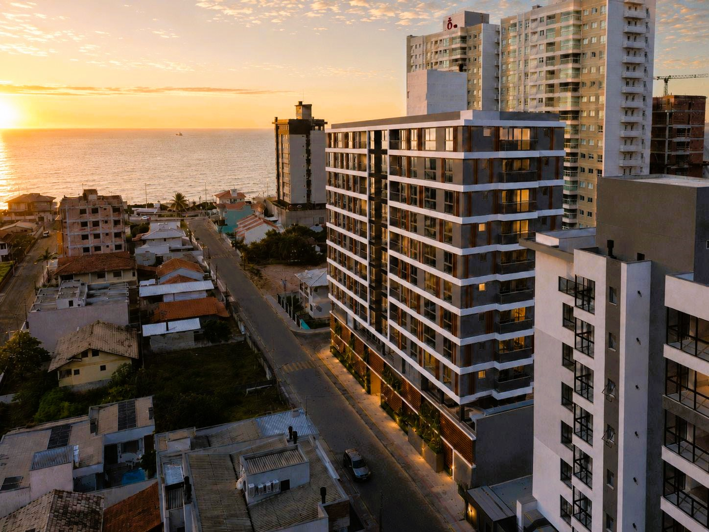
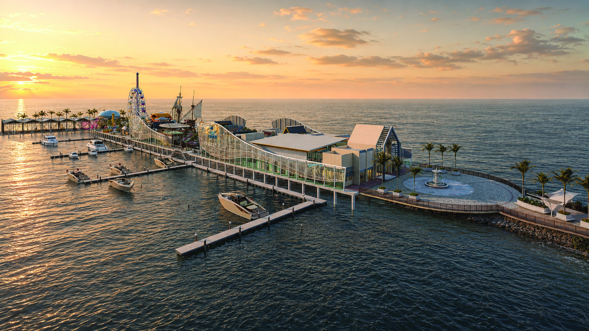
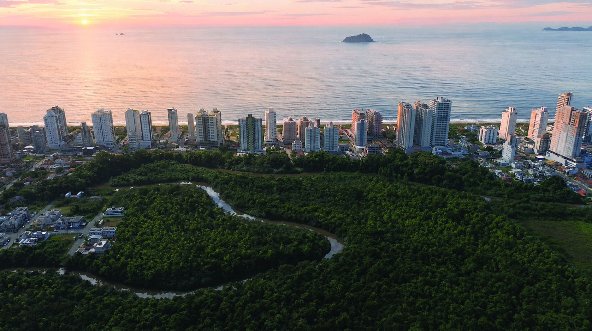
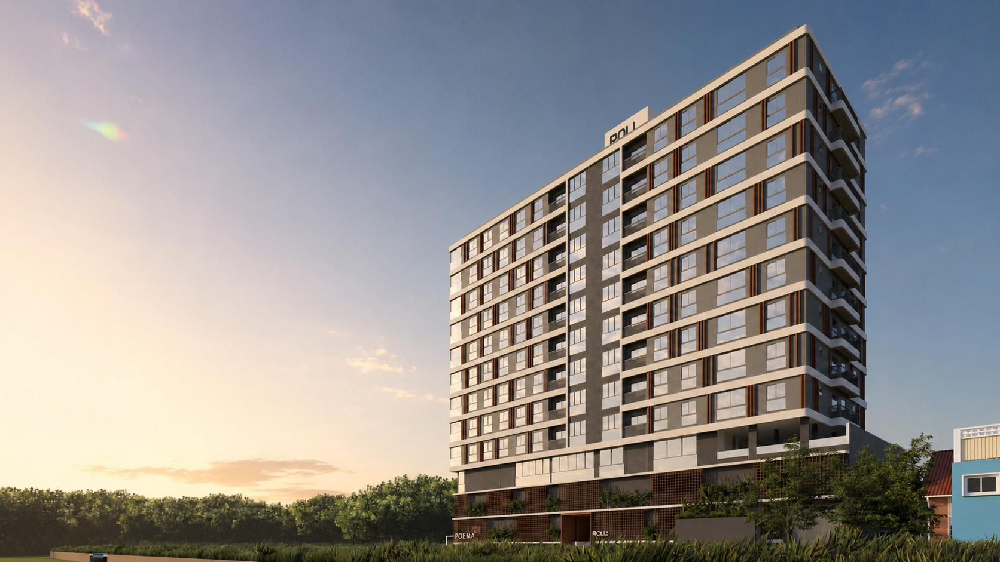
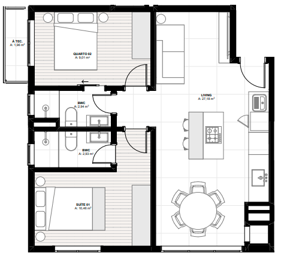

O objetivo desta apresentação não é vender um apartamento. É mostrar, através de projeções financeiras, como seu patrimônio pode evoluir ao longo dos próximos anos preservando liquidez, reduzindo riscos e permitindo diferentes caminhos para sua decisão.
Iniciar EstudoA pergunta não é: "Qual apartamento comprar?"
A verdadeira pergunta é:
Durante aproximadamente um mês e meio conversamos sobre diferentes possibilidades. Cada conversa ajudou a entender melhor seus objetivos, suas dúvidas e principalmente o cuidado que você tem antes de tomar uma decisão tão importante.
Por isso esta apresentação foi construída especificamente para você. Ela não tenta convencer. Ela mostra possibilidades.
Aplicado com liquidez.
Quitado.
Capital + imóvel.
Você comentou que talvez ainda não tenha certeza sobre morar no litoral. E isso faz total sentido. Uma mudança patrimonial nunca deve acontecer por impulso.
Entretanto, o mercado imobiliário funciona em ciclos. As condições de negociação existentes hoje podem não permanecer disponíveis futuramente. Por isso este estudo não pretende apressar sua decisão. Ele pretende mostrar quais caminhos existem caso você escolha aproveitar o momento atual.
Quando analisamos um imóvel, não estamos comprando apenas metros quadrados. Estamos escolhendo onde o patrimônio estará pelos próximos anos.
Enquanto diversos municípios cresceram de forma acelerada e desorganizada, Balneário Piçarras evoluiu preservando aquilo que mais atrai moradores: tranquilidade, segurança e contato com o mar.
Esse crescimento planejado é um dos fatores que contribuem para sua valorização imobiliária.
A certificação Bandeira Azul é concedida apenas para praias que atendem critérios rigorosos relacionados à qualidade da água, segurança, infraestrutura e preservação ambiental.
Na prática, significa viver em uma cidade reconhecida internacionalmente pela qualidade do seu litoral.
O apartamento analisado está localizado a aproximadamente três minutos caminhando do Parque Linear, um espaço criado para caminhadas, corridas, bicicleta, convivência e lazer.
Entre eles está o Porto Park, um projeto inovador que reforça ainda mais o potencial turístico da cidade.
Independentemente do prazo de implantação, grandes investimentos públicos e privados costumam aumentar o interesse pela região e contribuir para valorização imobiliária ao longo do tempo.


Além do litoral, Balneário Piçarras também investe em áreas permanentes de preservação, ecoturismo e qualidade ambiental. Isso significa mais qualidade de vida para moradores e maior atratividade para visitantes.
Menos trânsito. Mais tempo. Mais qualidade de vida.
Estrutura pensada para lazer, saúde e descanso.
Espaços criados para aproveitar momentos especiais.
Ter um imóvel na praia também significa poder desacelerar.
Esta não é apenas uma unidade na planta. É um imóvel cuidadosamente localizado, próximo ao mar, ao Parque Linear e inserido em uma das regiões que mais vêm despertando interesse no litoral catarinense.

405
62,05 m²
2 Suítes
1 Suíte Híbrida
1 vaga
R$ 693.011,47

Os ambientes foram distribuídos buscando integração entre sala, cozinha, varanda e área íntima.
A suíte híbrida oferece flexibilidade para adaptar o espaço conforme a necessidade da família, escritório ou quarto de hóspedes.
É um apartamento que privilegia conforto sem desperdiçar área útil.
Os ambientes foram planejados para oferecer experiências tanto aos moradores quanto aos convidados.
Durante nossas conversas, percebi que sua maior preocupação nunca foi simplesmente adquirir um imóvel. Sempre foi preservar seu patrimônio, manter liberdade para decidir o futuro e fazer uma escolha consciente.
É exatamente por isso que a próxima etapa deste estudo talvez seja a mais importante de todas.
Vamos deixar a emoção de lado por alguns minutos e olhar exclusivamente para os números.
Você poderá alterar cenários, modificar valores, simular aluguel, acompanhar a evolução do patrimônio e visualizar como diferentes decisões impactam o resultado final.
Até este momento analisamos localização, qualidade de vida e características do imóvel.
Agora vamos responder à pergunta mais importante:
Para isso foi desenvolvido um simulador exclusivo. Nele você poderá alterar cenários, modificar valores, simular rendimentos, acompanhar a evolução do patrimônio e visualizar diferentes estratégias.
"Os números não foram criados para convencer. Foram criados para ajudar você a decidir."
A partir deste ponto todas as informações abaixo são recalculadas em tempo real. Você poderá modificar os valores e visualizar imediatamente como cada decisão impacta seu patrimônio.
Abrir Simulador FinanceiroTodos os cálculos abaixo são atualizados em tempo real. Você pode alterar valores, comparar cenários e visualizar como pequenas mudanças podem impactar seu patrimônio ao longo dos próximos anos.
Escolha quanto você acredita que conseguiria alugar um dos imóveis. O system recalculará todo o patrimônio automaticamente.
| Durante a obra | CUB Positivo |
| Após as chaves | IPCA + 0,9% a.m. |
| CDI Líquido | 0,80% |
Após o pagamento da entrada, o saldo permanece investido e continua criando rendimento mês após mês.
As parcelas podem ser compostas por parte do rendimento do investimento e parte do fluxo mensal da cliente.
Os reforços são pagos utilizando o caixa disponível, mantendo a estratégia planejada.
O cliente poderá optar por morar no apartamento, alugá-lo ou utilizar o imóvel atual para gerar renda.
Morar na praia e alugar São Bento.
Continuar em São Bento e alugar Piçarras.
Vender São Bento futuramente e concentrar patrimônio no litoral.
Kátia, considerando os parâmetros atuais desta simulação, parte das parcelas é suportada pelo rendimento do capital investido e parte pelo fluxo mensal definido por você. Ao longo do contrato o patrimônio continua evoluindo enquanto os pagamentos acontecem de forma planejada. Na entrega das chaves você poderá escolher entre morar no apartamento, gerar renda com locação ou até vender um dos imóveis caso faça sentido naquele momento.
Pagamento da entrada de R$ 69.301,15. O saldo permanece investido produzindo rendimento.
Começam os reforços anuais. As parcelas seguem normalmente.
A partir daqui as parcelas passam a sofrer atualização pelo CUB-SC Positivo.
Neste momento você escolhe qual estratégia deseja seguir: morar na praia, alugar São Bento, alugar Piçarras ou vender um dos imóveis.
Finalização do fluxo planejado e consolidação do patrimônio.
Capital ainda disponível na entrega das chaves.
Estimativa conservadora.
Valor controlado pelo slider.
Resultado projetado.
| Mês | Parcela | Rendimento | Bolso | Aluguel | Saldo Banco | Patrimônio |
|---|
Seu patrimônio permanece distribuído entre liquidez financeira e imóveis, reduzindo concentração em apenas um ativo.
Parte das parcelas é suportada pelo rendimento do capital investido, reduzindo o desembolso mensal.
Na entrega das chaves você ainda poderá decidir entre morar, alugar, vender ou manter os dois imóveis.
Mesmo durante a operação permanece um saldo financeiro disponível, preservando segurança patrimonial.
O objetivo deste estudo foi mostrar que existem diferentes caminhos para utilizar o patrimônio que você já construiu. Cada alternativa possui vantagens, riscos e momentos ideais. A decisão continua sendo totalmente sua.
O mais importante é que ela seja tomada com clareza, compreendendo o impacto financeiro de cada possibilidade.
Não existe obrigação. O apartamento pode permanecer como investimento, gerar renda por locação ou até mesmo ser vendido futuramente.
Todos os valores desta página são simuláveis. Você pode alterar o aluguel entre R$ 1.500 e R$ 7.000 e visualizar instantaneamente o impacto no patrimônio.
Não. Durante a obra as parcelas acompanham o CUB-SC. Após a entrega das chaves passam para IPCA + 0,9% ao mês conforme tabela da incorporadora. Por isso todos os cálculos deste estudo utilizam projeções.
Sim. A engenharia financeira foi construída justamente para preservar essa liberdade. Nada impede que, no futuro, você decida vender São Bento, permanecer com os dois imóveis ou até concentrar todo o patrimônio no litoral.
Kátia, durante nossas conversas percebi que você toma decisões importantes apenas quando compreende exatamente todos os cenários possíveis. Foi por isso que desenvolvi este estudo.
Mais importante do que escolher um apartamento é compreender como cada decisão impacta seu patrimônio, sua liquidez e sua qualidade de vida ao longo dos próximos anos.
Independentemente da alternativa escolhida, a decisão continuará sendo totalmente sua. Meu papel é ajudá-la a visualizar esses caminhos de forma clara, transparente e baseada em números.
Todos os cálculos apresentados podem ser ajustados. Caso deseje, podemos construir novos cenários utilizando outros valores de aluguel, novos aportes ou diferentes estratégias patrimoniais.
Conversar sobre este estudo